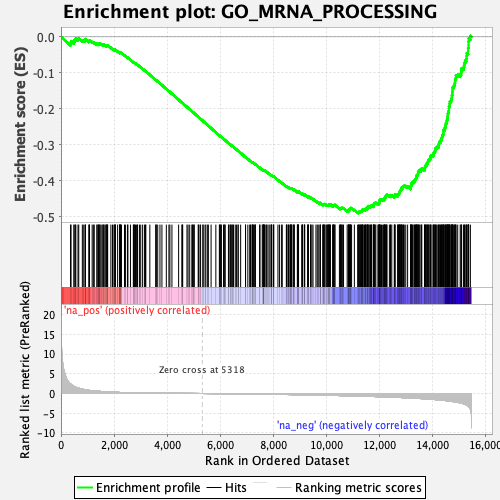
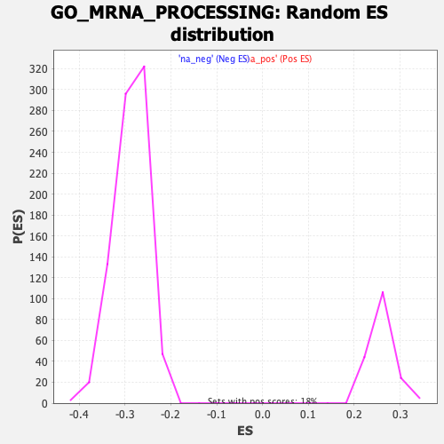

| | | Dataset | DE_genes |
| Phenotype | NoPhenotypeAvailable |
| Upregulated in class | na_neg |
| GeneSet | GO_MRNA_PROCESSING |
| Enrichment Score (ES) | -0.48929897 |
| Normalized Enrichment Score (NES) | -1.7087564 |
| Nominal p-value | 0.0 |
| FDR q-value | 0.08152507 |
| FWER p-Value | 0.584 |
Table: GSEA Results Summary

Fig 1: Enrichment plot: GO_MRNA_PROCESSING
Profile of the Running ES Score & Positions of GeneSet Members on the Rank Ordered List
| PROBE | GENE SYMBOL | GENE_TITLE | RANK IN GENE LIST | RANK METRIC SCORE | RUNNING ES | CORE ENRICHMENT | | 1 | SF3A2 | | | 358 | 2.399 | -0.0171 | No |
| 2 | SF3B4 | | | 379 | 2.306 | -0.0119 | No |
| 3 | POLR2K | | | 487 | 1.816 | -0.0139 | No |
| 4 | HNRNPC | | | 495 | 1.778 | -0.0094 | No |
| 5 | CIR1 | | | 541 | 1.632 | -0.0078 | No |
| 6 | KHSRP | | | 559 | 1.561 | -0.0045 | No |
| 7 | PNPT1 | | | 641 | 1.387 | -0.0060 | No |
| 8 | LSM3 | | | 669 | 1.334 | -0.0041 | No |
| 9 | HNRNPUL1 | | | 804 | 1.105 | -0.0099 | No |
| 10 | FMR1 | | | 838 | 1.061 | -0.0091 | No |
| 11 | RBM11 | | | 910 | 0.966 | -0.0111 | No |
| 12 | LSM1 | | | 911 | 0.965 | -0.0084 | No |
| 13 | CCNB1 | | | 918 | 0.957 | -0.0061 | No |
| 14 | SNRNP27 | | | 1048 | 0.804 | -0.0124 | No |
| 15 | U2AF2 | | | 1069 | 0.778 | -0.0115 | No |
| 16 | ZFP36L1 | | | 1074 | 0.777 | -0.0096 | No |
| 17 | GEMIN2 | | | 1174 | 0.697 | -0.0142 | No |
| 18 | PCBP2 | | | 1219 | 0.663 | -0.0153 | No |
| 19 | AFF2 | | | 1253 | 0.637 | -0.0157 | No |
| 20 | CPEB3 | | | 1353 | 0.584 | -0.0206 | No |
| 21 | UBL5 | | | 1361 | 0.579 | -0.0195 | No |
| 22 | MAGOHB | | | 1405 | 0.564 | -0.0207 | No |
| 23 | ADAR | | | 1411 | 0.563 | -0.0195 | No |
| 24 | PLRG1 | | | 1435 | 0.550 | -0.0195 | No |
| 25 | WTAP | | | 1465 | 0.535 | -0.0199 | No |
| 26 | ZC3H3 | | | 1469 | 0.532 | -0.0186 | No |
| 27 | CDK12 | | | 1515 | 0.511 | -0.0202 | No |
| 28 | PAN3 | | | 1574 | 0.481 | -0.0227 | No |
| 29 | SAP18 | | | 1591 | 0.474 | -0.0224 | No |
| 30 | TXNL4B | | | 1616 | 0.466 | -0.0227 | No |
| 31 | TSEN34 | | | 1624 | 0.463 | -0.0218 | No |
| 32 | SF1 | | | 1691 | 0.436 | -0.0250 | No |
| 33 | PAPOLA | | | 1697 | 0.433 | -0.0241 | No |
| 34 | PCBP1 | | | 1724 | 0.419 | -0.0247 | No |
| 35 | ZMAT2 | | | 1738 | 0.412 | -0.0244 | No |
| 36 | QKI | | | 1744 | 0.410 | -0.0236 | No |
| 37 | SCAF11 | | | 1759 | 0.404 | -0.0234 | No |
| 38 | PRDX6 | | | 1880 | 0.359 | -0.0303 | No |
| 39 | RBM4B | | | 1941 | 0.345 | -0.0334 | No |
| 40 | SMNDC1 | | | 1995 | 0.328 | -0.0360 | No |
| 41 | MBNL1 | | | 2032 | 0.317 | -0.0375 | No |
| 42 | CSTF2 | | | 2034 | 0.317 | -0.0366 | No |
| 43 | RBMX2 | | | 2037 | 0.316 | -0.0359 | No |
| 44 | LSM10 | | | 2048 | 0.313 | -0.0357 | No |
| 45 | PTBP3 | | | 2134 | 0.285 | -0.0405 | No |
| 46 | MBNL3 | | | 2208 | 0.264 | -0.0446 | No |
| 47 | RBM22 | | | 2214 | 0.263 | -0.0442 | No |
| 48 | CHTOP | | | 2223 | 0.261 | -0.0440 | No |
| 49 | PPIL1 | | | 2224 | 0.261 | -0.0433 | No |
| 50 | KHDRBS1 | | | 2237 | 0.258 | -0.0434 | No |
| 51 | RBMXL1 | | | 2246 | 0.256 | -0.0432 | No |
| 52 | RNASEL | | | 2279 | 0.248 | -0.0446 | No |
| 53 | HNRNPH2 | | | 2393 | 0.229 | -0.0515 | No |
| 54 | ZNF830 | | | 2428 | 0.220 | -0.0531 | No |
| 55 | DHX40 | | | 2504 | 0.206 | -0.0575 | No |
| 56 | SCNM1 | | | 2522 | 0.204 | -0.0581 | No |
| 57 | MBNL2 | | | 2618 | 0.186 | -0.0639 | No |
| 58 | RNGTT | | | 2726 | 0.174 | -0.0705 | No |
| 59 | HNRNPD | | | 2741 | 0.170 | -0.0710 | No |
| 60 | NPM1 | | | 2760 | 0.167 | -0.0717 | No |
| 61 | FUS | | | 2778 | 0.165 | -0.0724 | No |
| 62 | POLR2A | | | 2807 | 0.160 | -0.0738 | No |
| 63 | RSRC1 | | | 2842 | 0.157 | -0.0756 | No |
| 64 | POLR2F | | | 2881 | 0.152 | -0.0777 | No |
| 65 | DNAJC8 | | | 2888 | 0.151 | -0.0777 | No |
| 66 | PRKACA | | | 2961 | 0.143 | -0.0821 | No |
| 67 | NOVA1 | | | 3005 | 0.139 | -0.0846 | No |
| 68 | SNRNP25 | | | 3076 | 0.133 | -0.0888 | No |
| 69 | PPP4R2 | | | 3145 | 0.127 | -0.0930 | No |
| 70 | DDX39B | | | 3184 | 0.124 | -0.0952 | No |
| 71 | SNRPF | | | 3197 | 0.122 | -0.0956 | No |
| 72 | SLC39A5 | | | 3348 | 0.110 | -0.1053 | No |
| 73 | TXNL4A | | | 3575 | 0.094 | -0.1201 | No |
| 74 | RBFOX3 | | | 3582 | 0.093 | -0.1202 | No |
| 75 | SF3B3 | | | 3586 | 0.093 | -0.1202 | No |
| 76 | RBM42 | | | 3645 | 0.089 | -0.1238 | No |
| 77 | SNRNP48 | | | 3730 | 0.086 | -0.1291 | No |
| 78 | SNRNP40 | | | 3804 | 0.081 | -0.1338 | No |
| 79 | PTCD2 | | | 3970 | 0.072 | -0.1445 | No |
| 80 | PRPF40A | | | 4067 | 0.066 | -0.1507 | No |
| 81 | CWC15 | | | 4104 | 0.064 | -0.1530 | No |
| 82 | CLNS1A | | | 4181 | 0.060 | -0.1579 | No |
| 83 | APOBEC2 | | | 4433 | 0.046 | -0.1744 | No |
| 84 | SNRPA | | | 4554 | 0.039 | -0.1823 | No |
| 85 | SSU72 | | | 4579 | 0.037 | -0.1838 | No |
| 86 | ELAVL1 | | | 4587 | 0.037 | -0.1842 | No |
| 87 | PRCC | | | 4748 | 0.029 | -0.1947 | No |
| 88 | CWC27 | | | 4789 | 0.026 | -0.1973 | No |
| 89 | LSM11 | | | 4851 | 0.024 | -0.2013 | No |
| 90 | SNRPD1 | | | 4931 | 0.020 | -0.2065 | No |
| 91 | SRPK3 | | | 4958 | 0.019 | -0.2082 | No |
| 92 | POLR2J | | | 4982 | 0.017 | -0.2097 | No |
| 93 | RBM27 | | | 5007 | 0.015 | -0.2112 | No |
| 94 | SNRPB2 | | | 5023 | 0.015 | -0.2122 | No |
| 95 | SRRM4 | | | 5174 | 0.008 | -0.2222 | No |
| 96 | DHX36 | | | 5178 | 0.008 | -0.2223 | No |
| 97 | CNOT6L | | | 5238 | 0.004 | -0.2262 | No |
| 98 | SRRM1 | | | 5261 | 0.003 | -0.2277 | No |
| 99 | CELF4 | | | 5346 | -0.002 | -0.2333 | No |
| 100 | CPEB1 | | | 5358 | -0.002 | -0.2340 | No |
| 101 | HNRNPL | | | 5429 | -0.006 | -0.2387 | No |
| 102 | NOVA2 | | | 5461 | -0.007 | -0.2407 | No |
| 103 | PRKRIP1 | | | 5528 | -0.011 | -0.2451 | No |
| 104 | PDCD7 | | | 5553 | -0.012 | -0.2466 | No |
| 105 | CWC25 | | | 5657 | -0.018 | -0.2534 | No |
| 106 | SETX | | | 5836 | -0.028 | -0.2652 | No |
| 107 | NCBP1 | | | 5969 | -0.037 | -0.2739 | No |
| 108 | BARD1 | | | 5986 | -0.038 | -0.2748 | No |
| 109 | RBM38 | | | 5995 | -0.039 | -0.2753 | No |
| 110 | PAPOLG | | | 6018 | -0.040 | -0.2766 | No |
| 111 | ERCC2 | | | 6046 | -0.042 | -0.2783 | No |
| 112 | CLASRP | | | 6126 | -0.048 | -0.2834 | No |
| 113 | NUDT21 | | | 6149 | -0.050 | -0.2847 | No |
| 114 | POLR2I | | | 6177 | -0.051 | -0.2864 | No |
| 115 | PDE12 | | | 6184 | -0.052 | -0.2866 | No |
| 116 | SF3A1 | | | 6311 | -0.060 | -0.2949 | No |
| 117 | RBMX | | | 6328 | -0.060 | -0.2958 | No |
| 118 | HNRNPA1 | | | 6377 | -0.064 | -0.2988 | No |
| 119 | USP49 | | | 6383 | -0.064 | -0.2989 | No |
| 120 | ACIN1 | | | 6420 | -0.067 | -0.3011 | No |
| 121 | SYNCRIP | | | 6455 | -0.069 | -0.3032 | No |
| 122 | CRNKL1 | | | 6481 | -0.071 | -0.3047 | No |
| 123 | RBM24 | | | 6500 | -0.073 | -0.3057 | No |
| 124 | LSM2 | | | 6567 | -0.077 | -0.3098 | No |
| 125 | BUD31 | | | 6612 | -0.082 | -0.3125 | No |
| 126 | SRPK1 | | | 6674 | -0.086 | -0.3164 | No |
| 127 | WBP4 | | | 6677 | -0.086 | -0.3162 | No |
| 128 | ADARB2 | | | 6771 | -0.093 | -0.3222 | No |
| 129 | RBM20 | | | 6954 | -0.107 | -0.3340 | No |
| 130 | POLR2C | | | 6957 | -0.107 | -0.3338 | No |
| 131 | SNRPD3 | | | 7042 | -0.114 | -0.3391 | No |
| 132 | ESRP1 | | | 7112 | -0.120 | -0.3434 | No |
| 133 | TRA2A | | | 7142 | -0.122 | -0.3449 | No |
| 134 | USP4 | | | 7161 | -0.123 | -0.3458 | No |
| 135 | CLP1 | | | 7211 | -0.128 | -0.3487 | No |
| 136 | SNRPE | | | 7218 | -0.128 | -0.3487 | No |
| 137 | HNRNPU | | | 7225 | -0.129 | -0.3488 | No |
| 138 | RBM25 | | | 7250 | -0.131 | -0.3500 | No |
| 139 | AHCYL1 | | | 7274 | -0.134 | -0.3511 | No |
| 140 | TGS1 | | | 7304 | -0.136 | -0.3527 | No |
| 141 | SARNP | | | 7323 | -0.138 | -0.3535 | No |
| 142 | CELF2 | | | 7325 | -0.138 | -0.3532 | No |
| 143 | PPARGC1A | | | 7487 | -0.151 | -0.3635 | No |
| 144 | CDC5L | | | 7499 | -0.152 | -0.3638 | No |
| 145 | RBM23 | | | 7585 | -0.160 | -0.3690 | No |
| 146 | SFPQ | | | 7614 | -0.163 | -0.3704 | No |
| 147 | SMU1 | | | 7622 | -0.163 | -0.3704 | No |
| 148 | POLR2H | | | 7638 | -0.165 | -0.3709 | No |
| 149 | DYRK1A | | | 7639 | -0.165 | -0.3705 | No |
| 150 | MTPAP | | | 7643 | -0.165 | -0.3702 | No |
| 151 | SRSF1 | | | 7647 | -0.165 | -0.3699 | No |
| 152 | ZCRB1 | | | 7667 | -0.167 | -0.3707 | No |
| 153 | LSM5 | | | 7695 | -0.170 | -0.3720 | No |
| 154 | SRSF12 | | | 7750 | -0.175 | -0.3752 | No |
| 155 | GTF2H2 | | | 7767 | -0.176 | -0.3757 | No |
| 156 | GEMIN5 | | | 7836 | -0.183 | -0.3797 | No |
| 157 | SRSF3 | | | 7876 | -0.186 | -0.3818 | No |
| 158 | LSM6 | | | 7924 | -0.191 | -0.3844 | No |
| 159 | CELF1 | | | 7931 | -0.192 | -0.3843 | No |
| 160 | THRAP3 | | | 7936 | -0.192 | -0.3840 | No |
| 161 | SF3B2 | | | 7999 | -0.198 | -0.3875 | No |
| 162 | CCNH | | | 8007 | -0.199 | -0.3875 | No |
| 163 | C9orf78 | | | 8021 | -0.201 | -0.3878 | No |
| 164 | GTF2F2 | | | 8176 | -0.216 | -0.3974 | No |
| 165 | CSTF3 | | | 8233 | -0.222 | -0.4005 | No |
| 166 | MAGOH | | | 8307 | -0.231 | -0.4047 | No |
| 167 | NONO | | | 8339 | -0.234 | -0.4061 | No |
| 168 | ZNF326 | | | 8493 | -0.250 | -0.4156 | No |
| 169 | AQR | | | 8501 | -0.251 | -0.4154 | No |
| 170 | PRPF38A | | | 8520 | -0.253 | -0.4158 | No |
| 171 | PTBP1 | | | 8569 | -0.258 | -0.4183 | No |
| 172 | DDX17 | | | 8575 | -0.259 | -0.4179 | No |
| 173 | GEMIN6 | | | 8625 | -0.264 | -0.4204 | No |
| 174 | SRPK2 | | | 8646 | -0.267 | -0.4210 | No |
| 175 | SREK1IP1 | | | 8656 | -0.268 | -0.4209 | No |
| 176 | HNRNPA3 | | | 8663 | -0.269 | -0.4205 | No |
| 177 | FRG1 | | | 8677 | -0.271 | -0.4206 | No |
| 178 | SRSF2 | | | 8689 | -0.273 | -0.4206 | No |
| 179 | YTHDC1 | | | 8745 | -0.280 | -0.4234 | No |
| 180 | PAF1 | | | 8773 | -0.282 | -0.4244 | No |
| 181 | RPUSD3 | | | 8776 | -0.283 | -0.4238 | No |
| 182 | PSIP1 | | | 8794 | -0.285 | -0.4241 | No |
| 183 | CSTF2T | | | 8908 | -0.299 | -0.4308 | No |
| 184 | WDR33 | | | 8915 | -0.300 | -0.4303 | No |
| 185 | BCAS2 | | | 8925 | -0.301 | -0.4301 | No |
| 186 | NCBP2 | | | 8941 | -0.303 | -0.4302 | No |
| 187 | ZNF473 | | | 8952 | -0.304 | -0.4300 | No |
| 188 | RBM15 | | | 8953 | -0.304 | -0.4292 | No |
| 189 | SART3 | | | 9072 | -0.320 | -0.4361 | No |
| 190 | CPSF2 | | | 9099 | -0.322 | -0.4370 | No |
| 191 | SRSF11 | | | 9104 | -0.323 | -0.4363 | No |
| 192 | PPP1R8 | | | 9110 | -0.324 | -0.4357 | No |
| 193 | TSEN15 | | | 9176 | -0.331 | -0.4391 | No |
| 194 | USP39 | | | 9177 | -0.332 | -0.4382 | No |
| 195 | TSEN2 | | | 9187 | -0.334 | -0.4379 | No |
| 196 | PRPF3 | | | 9296 | -0.347 | -0.4441 | No |
| 197 | RBBP6 | | | 9308 | -0.348 | -0.4438 | No |
| 198 | SRSF4 | | | 9318 | -0.349 | -0.4434 | No |
| 199 | ZBTB7A | | | 9324 | -0.350 | -0.4428 | No |
| 200 | ECD | | | 9404 | -0.359 | -0.4470 | No |
| 201 | SUPT5H | | | 9414 | -0.360 | -0.4466 | No |
| 202 | ERCC3 | | | 9455 | -0.366 | -0.4483 | No |
| 203 | HNRNPF | | | 9498 | -0.373 | -0.4500 | No |
| 204 | SNRPB | | | 9609 | -0.390 | -0.4562 | No |
| 205 | DDX20 | | | 9657 | -0.397 | -0.4582 | No |
| 206 | PPWD1 | | | 9695 | -0.403 | -0.4596 | No |
| 207 | KHDRBS2 | | | 9765 | -0.412 | -0.4630 | No |
| 208 | PRPF18 | | | 9770 | -0.412 | -0.4621 | No |
| 209 | RBM7 | | | 9772 | -0.413 | -0.4610 | No |
| 210 | THOC3 | | | 9864 | -0.427 | -0.4659 | No |
| 211 | THOC5 | | | 9883 | -0.430 | -0.4658 | No |
| 212 | DHX8 | | | 9903 | -0.432 | -0.4659 | No |
| 213 | SCAF8 | | | 9907 | -0.433 | -0.4649 | No |
| 214 | HNRNPR | | | 9916 | -0.434 | -0.4642 | No |
| 215 | LUC7L2 | | | 9942 | -0.438 | -0.4646 | No |
| 216 | CDC73 | | | 9988 | -0.445 | -0.4664 | No |
| 217 | ZRANB2 | | | 10016 | -0.448 | -0.4669 | No |
| 218 | NOL3 | | | 10041 | -0.452 | -0.4672 | No |
| 219 | THOC7 | | | 10071 | -0.456 | -0.4679 | No |
| 220 | CSDC2 | | | 10073 | -0.457 | -0.4666 | No |
| 221 | THOC2 | | | 10092 | -0.460 | -0.4665 | No |
| 222 | PABPC1L | | | 10121 | -0.465 | -0.4671 | No |
| 223 | EFTUD2 | | | 10128 | -0.466 | -0.4662 | No |
| 224 | CSTF1 | | | 10133 | -0.467 | -0.4651 | No |
| 225 | NCL | | | 10154 | -0.470 | -0.4651 | No |
| 226 | SNUPN | | | 10239 | -0.483 | -0.4694 | No |
| 227 | GTF2H5 | | | 10256 | -0.484 | -0.4691 | No |
| 228 | GEMIN8 | | | 10260 | -0.485 | -0.4679 | No |
| 229 | TUT1 | | | 10274 | -0.487 | -0.4674 | No |
| 230 | NSRP1 | | | 10291 | -0.490 | -0.4671 | No |
| 231 | TTF2 | | | 10320 | -0.493 | -0.4676 | No |
| 232 | SNRPG | | | 10324 | -0.494 | -0.4664 | No |
| 233 | XRN2 | | | 10493 | -0.518 | -0.4761 | No |
| 234 | WBP11 | | | 10524 | -0.524 | -0.4766 | No |
| 235 | NUP98 | | | 10534 | -0.525 | -0.4757 | No |
| 236 | FAM172A | | | 10554 | -0.529 | -0.4755 | No |
| 237 | DDX46 | | | 10566 | -0.532 | -0.4748 | No |
| 238 | PABPC1 | | | 10594 | -0.537 | -0.4750 | No |
| 239 | RRP1B | | | 10620 | -0.541 | -0.4752 | No |
| 240 | COIL | | | 10649 | -0.545 | -0.4755 | No |
| 241 | LEO1 | | | 10786 | -0.566 | -0.4830 | No |
| 242 | SNIP1 | | | 10830 | -0.572 | -0.4842 | No |
| 243 | SNW1 | | | 10835 | -0.572 | -0.4829 | No |
| 244 | CELF6 | | | 10843 | -0.574 | -0.4817 | No |
| 245 | GTF2H4 | | | 10844 | -0.574 | -0.4801 | No |
| 246 | GEMIN7 | | | 10876 | -0.579 | -0.4805 | No |
| 247 | SRSF6 | | | 10883 | -0.579 | -0.4793 | No |
| 248 | SFSWAP | | | 10893 | -0.580 | -0.4783 | No |
| 249 | SYF2 | | | 10905 | -0.582 | -0.4774 | No |
| 250 | RNPC3 | | | 10912 | -0.584 | -0.4761 | No |
| 251 | DAZAP1 | | | 10921 | -0.585 | -0.4750 | No |
| 252 | PRMT5 | | | 10952 | -0.590 | -0.4753 | No |
| 253 | GPATCH1 | | | 11057 | -0.607 | -0.4806 | No |
| 254 | ESRP2 | | | 11181 | -0.632 | -0.4870 | No |
| 255 | U2SURP | | | 11217 | -0.639 | -0.4875 | Yes |
| 256 | POLR2D | | | 11224 | -0.641 | -0.4861 | Yes |
| 257 | APP | | | 11258 | -0.648 | -0.4865 | Yes |
| 258 | SCAF1 | | | 11267 | -0.649 | -0.4852 | Yes |
| 259 | GEMIN4 | | | 11283 | -0.653 | -0.4843 | Yes |
| 260 | FXR1 | | | 11310 | -0.659 | -0.4842 | Yes |
| 261 | ZMAT5 | | | 11323 | -0.661 | -0.4831 | Yes |
| 262 | TIA1 | | | 11341 | -0.665 | -0.4824 | Yes |
| 263 | ZC3H14 | | | 11365 | -0.670 | -0.4820 | Yes |
| 264 | WDR77 | | | 11367 | -0.670 | -0.4802 | Yes |
| 265 | POLR2L | | | 11372 | -0.671 | -0.4786 | Yes |
| 266 | SNRPC | | | 11412 | -0.681 | -0.4793 | Yes |
| 267 | AKAP8L | | | 11439 | -0.685 | -0.4791 | Yes |
| 268 | HNRNPA2B1 | | | 11476 | -0.694 | -0.4795 | Yes |
| 269 | HNRNPA0 | | | 11479 | -0.695 | -0.4777 | Yes |
| 270 | DDX1 | | | 11493 | -0.697 | -0.4766 | Yes |
| 271 | RBM8A | | | 11503 | -0.699 | -0.4752 | Yes |
| 272 | TRA2B | | | 11550 | -0.709 | -0.4763 | Yes |
| 273 | RBM17 | | | 11554 | -0.710 | -0.4745 | Yes |
| 274 | METTL16 | | | 11567 | -0.712 | -0.4733 | Yes |
| 275 | CASC3 | | | 11571 | -0.714 | -0.4715 | Yes |
| 276 | POLR2E | | | 11576 | -0.715 | -0.4697 | Yes |
| 277 | CCNT1 | | | 11620 | -0.725 | -0.4706 | Yes |
| 278 | SRRM2 | | | 11659 | -0.734 | -0.4710 | Yes |
| 279 | RALY | | | 11667 | -0.735 | -0.4694 | Yes |
| 280 | ERN1 | | | 11705 | -0.743 | -0.4698 | Yes |
| 281 | SNRPD2 | | | 11710 | -0.743 | -0.4680 | Yes |
| 282 | PHF5A | | | 11773 | -0.756 | -0.4700 | Yes |
| 283 | HNRNPK | | | 11778 | -0.756 | -0.4681 | Yes |
| 284 | POLR2B | | | 11791 | -0.761 | -0.4668 | Yes |
| 285 | HNRNPA1L2 | | | 11794 | -0.761 | -0.4647 | Yes |
| 286 | SRRT | | | 11798 | -0.762 | -0.4628 | Yes |
| 287 | SLTM | | | 11822 | -0.766 | -0.4622 | Yes |
| 288 | RPRD1B | | | 11836 | -0.770 | -0.4609 | Yes |
| 289 | RPRD2 | | | 11866 | -0.775 | -0.4606 | Yes |
| 290 | CDK7 | | | 11944 | -0.793 | -0.4635 | Yes |
| 291 | FXR2 | | | 11971 | -0.797 | -0.4630 | Yes |
| 292 | ZC3H10 | | | 11988 | -0.802 | -0.4618 | Yes |
| 293 | PPIE | | | 11998 | -0.805 | -0.4601 | Yes |
| 294 | DDX41 | | | 11999 | -0.805 | -0.4579 | Yes |
| 295 | STRAP | | | 12001 | -0.805 | -0.4557 | Yes |
| 296 | ZC3H13 | | | 12002 | -0.805 | -0.4534 | Yes |
| 297 | PPIL3 | | | 12030 | -0.811 | -0.4529 | Yes |
| 298 | CWF19L1 | | | 12036 | -0.812 | -0.4510 | Yes |
| 299 | EIF4A3 | | | 12080 | -0.822 | -0.4515 | Yes |
| 300 | ALYREF | | | 12125 | -0.836 | -0.4521 | Yes |
| 301 | PRPF8 | | | 12158 | -0.843 | -0.4518 | Yes |
| 302 | IK | | | 12187 | -0.853 | -0.4513 | Yes |
| 303 | U2AF1 | | | 12188 | -0.853 | -0.4489 | Yes |
| 304 | IWS1 | | | 12195 | -0.854 | -0.4469 | Yes |
| 305 | THOC1 | | | 12214 | -0.858 | -0.4457 | Yes |
| 306 | YBX1 | | | 12218 | -0.858 | -0.4435 | Yes |
| 307 | KIN | | | 12246 | -0.864 | -0.4428 | Yes |
| 308 | FASTKD5 | | | 12256 | -0.866 | -0.4410 | Yes |
| 309 | SUGP1 | | | 12266 | -0.868 | -0.4392 | Yes |
| 310 | GTF2F1 | | | 12289 | -0.875 | -0.4382 | Yes |
| 311 | PRPF40B | | | 12377 | -0.895 | -0.4414 | Yes |
| 312 | SLBP | | | 12420 | -0.909 | -0.4417 | Yes |
| 313 | CPSF3 | | | 12426 | -0.911 | -0.4394 | Yes |
| 314 | PRPF19 | | | 12467 | -0.920 | -0.4395 | Yes |
| 315 | PABPN1 | | | 12561 | -0.944 | -0.4430 | Yes |
| 316 | AURKAIP1 | | | 12571 | -0.945 | -0.4410 | Yes |
| 317 | GTF2H3 | | | 12588 | -0.950 | -0.4394 | Yes |
| 318 | UPF3B | | | 12590 | -0.951 | -0.4367 | Yes |
| 319 | ZCCHC8 | | | 12690 | -0.979 | -0.4406 | Yes |
| 320 | CPSF4 | | | 12692 | -0.979 | -0.4379 | Yes |
| 321 | SART1 | | | 12718 | -0.987 | -0.4368 | Yes |
| 322 | AAR2 | | | 12735 | -0.993 | -0.4350 | Yes |
| 323 | PRMT7 | | | 12749 | -0.996 | -0.4331 | Yes |
| 324 | WDR83 | | | 12759 | -1.000 | -0.4309 | Yes |
| 325 | PRPF38B | | | 12769 | -1.002 | -0.4287 | Yes |
| 326 | CPSF6 | | | 12786 | -1.007 | -0.4269 | Yes |
| 327 | PRPF4 | | | 12807 | -1.014 | -0.4254 | Yes |
| 328 | DHX16 | | | 12820 | -1.018 | -0.4233 | Yes |
| 329 | DBR1 | | | 12831 | -1.023 | -0.4211 | Yes |
| 330 | SRSF7 | | | 12835 | -1.025 | -0.4184 | Yes |
| 331 | SRSF8 | | | 12877 | -1.038 | -0.4182 | Yes |
| 332 | CHERP | | | 12892 | -1.043 | -0.4162 | Yes |
| 333 | CDK13 | | | 12908 | -1.047 | -0.4143 | Yes |
| 334 | HNRNPH3 | | | 12938 | -1.057 | -0.4132 | Yes |
| 335 | CDC40 | | | 12994 | -1.073 | -0.4139 | Yes |
| 336 | SLU7 | | | 13064 | -1.096 | -0.4154 | Yes |
| 337 | HSF1 | | | 13174 | -1.127 | -0.4195 | Yes |
| 338 | RBM28 | | | 13180 | -1.129 | -0.4166 | Yes |
| 339 | SF3A3 | | | 13185 | -1.132 | -0.4137 | Yes |
| 340 | RBM3 | | | 13200 | -1.139 | -0.4114 | Yes |
| 341 | CACTIN | | | 13204 | -1.141 | -0.4084 | Yes |
| 342 | DHX35 | | | 13212 | -1.143 | -0.4056 | Yes |
| 343 | RNF20 | | | 13244 | -1.152 | -0.4045 | Yes |
| 344 | ADARB1 | | | 13262 | -1.159 | -0.4023 | Yes |
| 345 | PPIH | | | 13310 | -1.176 | -0.4021 | Yes |
| 346 | RBM15B | | | 13315 | -1.179 | -0.3991 | Yes |
| 347 | DHX15 | | | 13336 | -1.186 | -0.3971 | Yes |
| 348 | U2AF1L4 | | | 13360 | -1.198 | -0.3952 | Yes |
| 349 | PNN | | | 13374 | -1.203 | -0.3927 | Yes |
| 350 | GPKOW | | | 13393 | -1.211 | -0.3905 | Yes |
| 351 | CTNNBL1 | | | 13397 | -1.212 | -0.3873 | Yes |
| 352 | PRPF4B | | | 13405 | -1.215 | -0.3843 | Yes |
| 353 | SRSF9 | | | 13431 | -1.224 | -0.3826 | Yes |
| 354 | LUC7L | | | 13455 | -1.236 | -0.3806 | Yes |
| 355 | DCPS | | | 13459 | -1.237 | -0.3773 | Yes |
| 356 | RBM39 | | | 13462 | -1.238 | -0.3740 | Yes |
| 357 | PCF11 | | | 13494 | -1.251 | -0.3725 | Yes |
| 358 | RBM4 | | | 13504 | -1.254 | -0.3696 | Yes |
| 359 | RBM26 | | | 13567 | -1.280 | -0.3701 | Yes |
| 360 | LGALS3 | | | 13580 | -1.285 | -0.3673 | Yes |
| 361 | DHX38 | | | 13599 | -1.292 | -0.3648 | Yes |
| 362 | FIP1L1 | | | 13700 | -1.332 | -0.3678 | Yes |
| 363 | PRPF31 | | | 13712 | -1.338 | -0.3647 | Yes |
| 364 | GTF2H1 | | | 13716 | -1.340 | -0.3611 | Yes |
| 365 | METTL14 | | | 13734 | -1.350 | -0.3585 | Yes |
| 366 | SYMPK | | | 13752 | -1.361 | -0.3558 | Yes |
| 367 | PHRF1 | | | 13788 | -1.378 | -0.3542 | Yes |
| 368 | CDK11A | | | 13790 | -1.378 | -0.3504 | Yes |
| 369 | SNRNP200 | | | 13820 | -1.387 | -0.3484 | Yes |
| 370 | POLR2G | | | 13835 | -1.394 | -0.3454 | Yes |
| 371 | MNAT1 | | | 13840 | -1.397 | -0.3418 | Yes |
| 372 | ZRSR2 | | | 13870 | -1.409 | -0.3397 | Yes |
| 373 | CPSF1 | | | 13908 | -1.429 | -0.3382 | Yes |
| 374 | DDX23 | | | 13922 | -1.434 | -0.3350 | Yes |
| 375 | RNF40 | | | 13926 | -1.435 | -0.3312 | Yes |
| 376 | ALKBH5 | | | 13951 | -1.444 | -0.3287 | Yes |
| 377 | HNRNPM | | | 14017 | -1.478 | -0.3289 | Yes |
| 378 | CCAR1 | | | 14041 | -1.496 | -0.3262 | Yes |
| 379 | TRUB2 | | | 14047 | -1.498 | -0.3223 | Yes |
| 380 | SNRNP70 | | | 14069 | -1.513 | -0.3194 | Yes |
| 381 | SON | | | 14094 | -1.531 | -0.3167 | Yes |
| 382 | PUF60 | | | 14106 | -1.540 | -0.3131 | Yes |
| 383 | CPSF7 | | | 14113 | -1.542 | -0.3092 | Yes |
| 384 | SAFB | | | 14146 | -1.565 | -0.3069 | Yes |
| 385 | PDCD11 | | | 14180 | -1.591 | -0.3046 | Yes |
| 386 | TSEN54 | | | 14230 | -1.619 | -0.3033 | Yes |
| 387 | RNPS1 | | | 14238 | -1.622 | -0.2992 | Yes |
| 388 | SF3B1 | | | 14247 | -1.628 | -0.2952 | Yes |
| 389 | LSM7 | | | 14258 | -1.634 | -0.2912 | Yes |
| 390 | SF3B5 | | | 14303 | -1.662 | -0.2895 | Yes |
| 391 | SNRNP35 | | | 14320 | -1.671 | -0.2858 | Yes |
| 392 | TARDBP | | | 14342 | -1.682 | -0.2825 | Yes |
| 393 | DHX9 | | | 14356 | -1.691 | -0.2786 | Yes |
| 394 | RBM5 | | | 14368 | -1.697 | -0.2746 | Yes |
| 395 | RBM10 | | | 14390 | -1.712 | -0.2711 | Yes |
| 396 | SRSF5 | | | 14410 | -1.723 | -0.2676 | Yes |
| 397 | LSM4 | | | 14413 | -1.724 | -0.2628 | Yes |
| 398 | HTATSF1 | | | 14414 | -1.724 | -0.2580 | Yes |
| 399 | HABP4 | | | 14464 | -1.762 | -0.2563 | Yes |
| 400 | RNF113A | | | 14470 | -1.767 | -0.2516 | Yes |
| 401 | CDK11B | | | 14488 | -1.779 | -0.2478 | Yes |
| 402 | GCFC2 | | | 14502 | -1.790 | -0.2436 | Yes |
| 403 | ISY1 | | | 14510 | -1.796 | -0.2390 | Yes |
| 404 | PRPF6 | | | 14541 | -1.820 | -0.2359 | Yes |
| 405 | SAFB2 | | | 14544 | -1.823 | -0.2309 | Yes |
| 406 | SUGP2 | | | 14562 | -1.840 | -0.2268 | Yes |
| 407 | BUD13 | | | 14572 | -1.846 | -0.2222 | Yes |
| 408 | HNRNPH1 | | | 14579 | -1.852 | -0.2174 | Yes |
| 409 | SUPT6H | | | 14582 | -1.853 | -0.2123 | Yes |
| 410 | PTBP2 | | | 14600 | -1.874 | -0.2082 | Yes |
| 411 | DDX5 | | | 14618 | -1.893 | -0.2040 | Yes |
| 412 | NELFE | | | 14621 | -1.894 | -0.1988 | Yes |
| 413 | SRSF10 | | | 14624 | -1.896 | -0.1936 | Yes |
| 414 | ARL6IP4 | | | 14647 | -1.916 | -0.1896 | Yes |
| 415 | LUC7L3 | | | 14650 | -1.919 | -0.1844 | Yes |
| 416 | PQBP1 | | | 14659 | -1.925 | -0.1795 | Yes |
| 417 | ZC3H11A | | | 14696 | -1.966 | -0.1763 | Yes |
| 418 | CWC22 | | | 14718 | -1.989 | -0.1721 | Yes |
| 419 | JMJD6 | | | 14731 | -1.999 | -0.1673 | Yes |
| 420 | GRSF1 | | | 14735 | -2.003 | -0.1619 | Yes |
| 421 | CWF19L2 | | | 14751 | -2.020 | -0.1572 | Yes |
| 422 | REST | | | 14753 | -2.021 | -0.1516 | Yes |
| 423 | SNRPA1 | | | 14758 | -2.026 | -0.1461 | Yes |
| 424 | POLDIP3 | | | 14759 | -2.026 | -0.1404 | Yes |
| 425 | HSPA8 | | | 14798 | -2.061 | -0.1371 | Yes |
| 426 | TBRG4 | | | 14822 | -2.084 | -0.1328 | Yes |
| 427 | RBM19 | | | 14845 | -2.101 | -0.1284 | Yes |
| 428 | PRPF39 | | | 14853 | -2.107 | -0.1229 | Yes |
| 429 | RPRD1A | | | 14857 | -2.114 | -0.1171 | Yes |
| 430 | KHDRBS3 | | | 14883 | -2.140 | -0.1128 | Yes |
| 431 | DDX47 | | | 14885 | -2.142 | -0.1068 | Yes |
| 432 | DDX39A | | | 14952 | -2.239 | -0.1049 | Yes |
| 433 | PAN2 | | | 15046 | -2.375 | -0.1044 | Yes |
| 434 | CDK9 | | | 15081 | -2.435 | -0.0998 | Yes |
| 435 | RBFOX2 | | | 15087 | -2.447 | -0.0933 | Yes |
| 436 | DDX42 | | | 15100 | -2.470 | -0.0871 | Yes |
| 437 | C1QBP | | | 15173 | -2.580 | -0.0846 | Yes |
| 438 | METTL3 | | | 15193 | -2.641 | -0.0785 | Yes |
| 439 | KDM1A | | | 15210 | -2.698 | -0.0719 | Yes |
| 440 | CTR9 | | | 15234 | -2.740 | -0.0657 | Yes |
| 441 | MFAP1 | | | 15278 | -2.861 | -0.0606 | Yes |
| 442 | CD2BP2 | | | 15290 | -2.888 | -0.0532 | Yes |
| 443 | AKAP17A | | | 15295 | -2.902 | -0.0452 | Yes |
| 444 | TFIP11 | | | 15343 | -3.126 | -0.0396 | Yes |
| 445 | RNMT | | | 15345 | -3.132 | -0.0308 | Yes |
| 446 | CIRBP | | | 15360 | -3.258 | -0.0226 | Yes |
| 447 | SREK1 | | | 15361 | -3.281 | -0.0133 | Yes |
| 448 | XAB2 | | | 15366 | -3.333 | -0.0042 | Yes |
| 449 | THOC6 | | | 15430 | -3.961 | 0.0027 | Yes |
Table: GSEA details [plain text format]

Fig 2: GO_MRNA_PROCESSING: Random ES distribution
Gene set null distribution of ES for GO_MRNA_PROCESSING